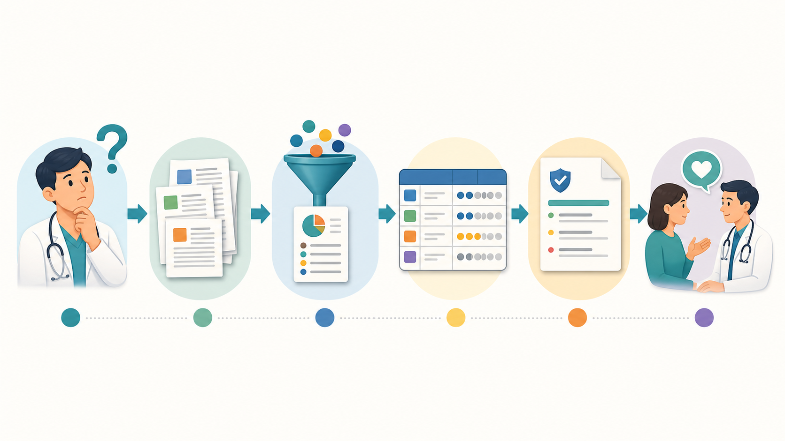

読む順番とトピックから探す
論文・SR・CPGを読むための学習索引
章番号を覚えていなくても大丈夫です。いま行っている確認作業、または知りたい方法論から、本文・詳細解説・原著ガイドへ直接進めます。

二つの入口
目的に合わせて入口を選ぶ
検索と絞り込み
用語、文書種別、難易度から絞る
索引の表示方法
A. 論文・SR・CPGを読む作業順
いま確認したい作業から進む
各段階では、問いを一つ置いてから、初学者向けの入口と発展学習を同時に表示します。
B. トピック／Guyattの考え方
知りたい概念から横断する
同じ概念に本編と詳細解説があるときは、どちらも残して役割を分けています。
一致する教材がありません。検索語を短くするか、条件をリセットしてください。